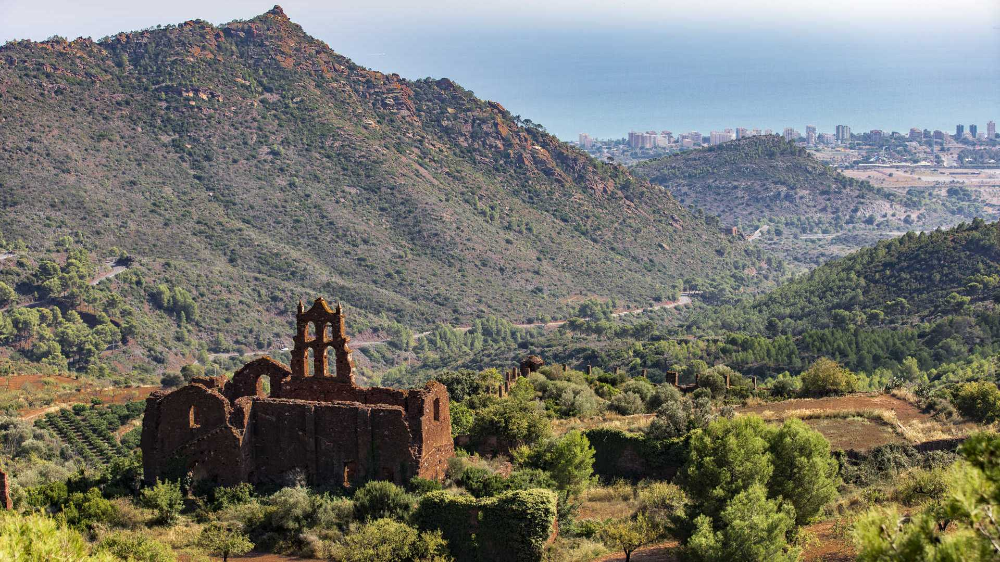
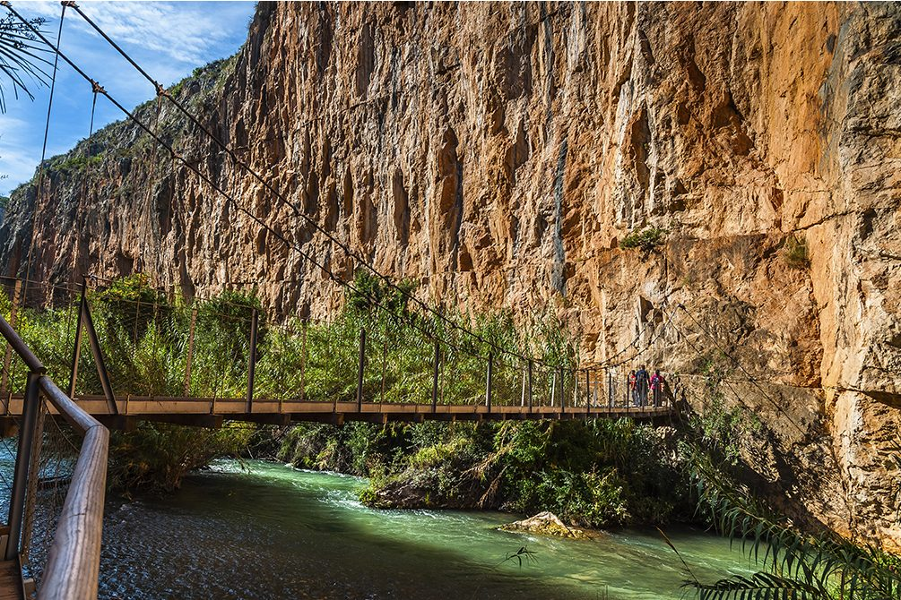
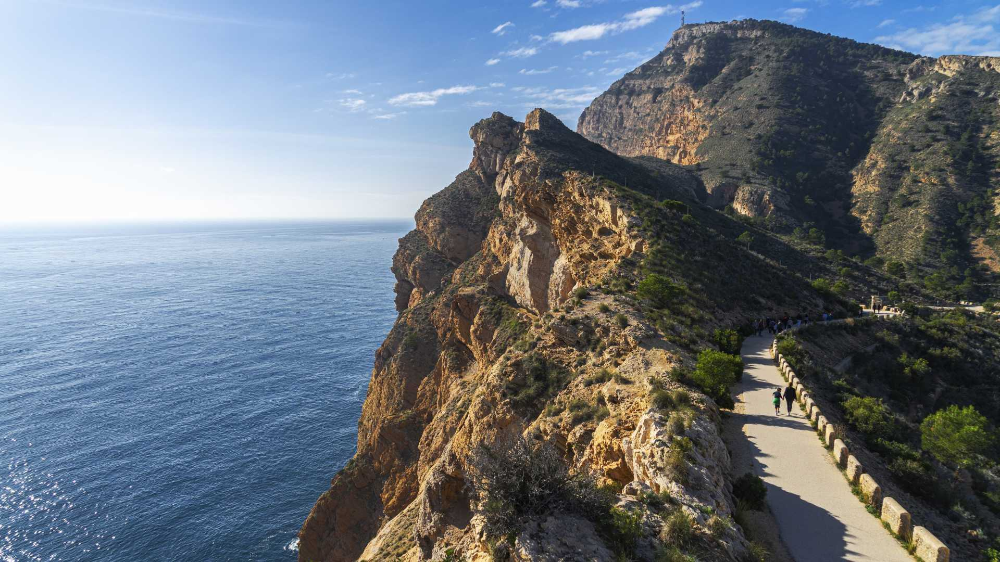
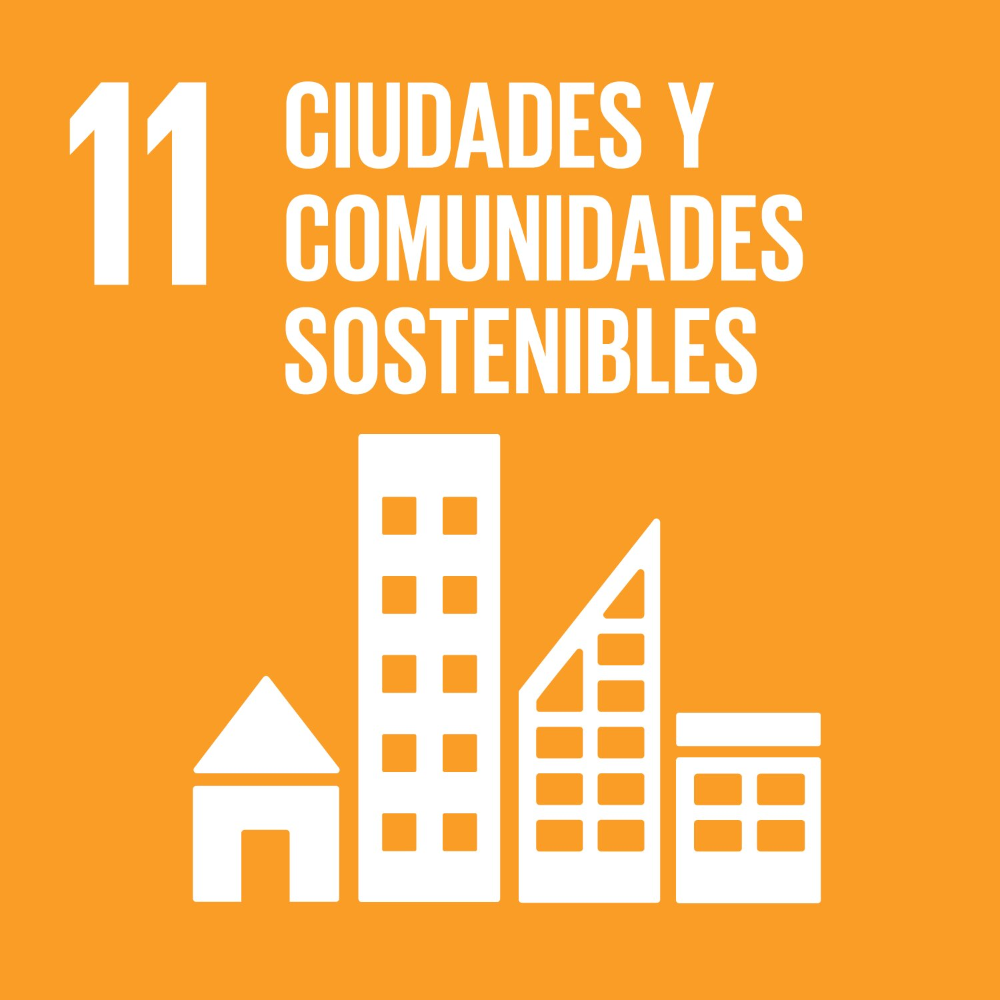
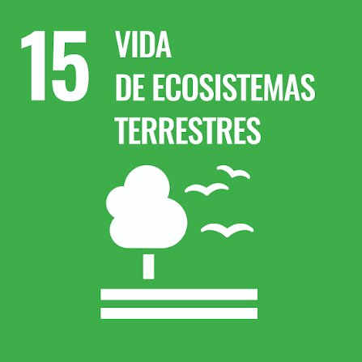

Castellón - Penyagolosa
Pico Penyagolosa: Ascensión clásica de alta montaña por bosques de pino negro hasta el techo de Castellón.
Explora parajes naturales protegidos de Alicante, Castellón y València fomentando el transporte limpio, el respeto a la biodiversidad y el desarrollo rural sostenible.





Selecciona una zona para centrar el radar meteorológico y consultar el viento en directo:

Fomentamos el acceso seguro, inclusivo y gratuito a las zonas verdes y espacios naturales de la Comunitat Valenciana, impulsando el transporte público para reducir la huella de carbono en los desplazamientos.

Promovemos el senderismo responsable para evitar la erosión del suelo, proteger la flora y fauna autóctona de nuestros parques naturales y concienciar sobre la conservación de la biodiversidad.
Antes de iniciar cualquier ruta por nuestros parques naturales, revisa estas normas básicas de convivencia y respeto ambiental: